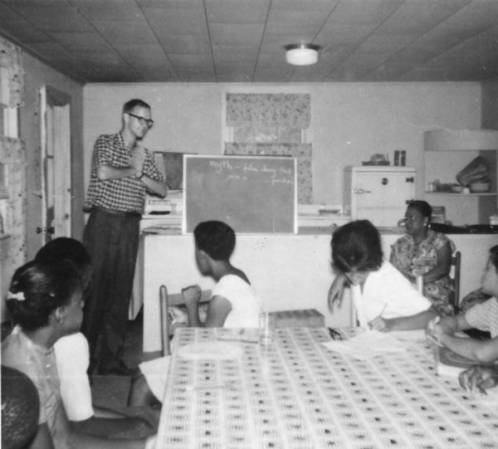

Freedom Schools opened during the first week of July 1964, after approximately 250 Freedom School volunteer teachers attended one-week training sessions at Western College for Women in Oxford, Ohio. The original plans had anticipated 25 Freedom Schools and 1,000 students; by the end of the summer, 41 schools had been opened to over 2,500 students.
Freedom Schools were established with the help and commitment of local communities, who provided various buildings for schools and housing for the volunteer teachers. While some of the schools were held in parks, kitchens, residential homes, and under trees, most classes were held in churches or church basements. Attendance varied throughout the summer. Some schools experienced consistent attendance, but that was the exception. Because attendance was not compulsory, recruitment and maintaining attendance was perhaps the primary challenge the schools faced. In Clarksdale, Mississippi, for instance, the average student attendance during the first week was fifteen, the second week was eight, but at any point during the summer the school may have had in attendance as many as thirty-five students. It was not uncommon for adults to attend class regularly.

Instruction was changed based on local conditions. In rural communities where students were expected to work during the school day, classes were often held at night. In schools that maintained traditional school hours, typically in urban areas, citizenship curriculum and traditional academic courses were offered in the morning and special classes such as music, drama, and typing were offered in the afternoon. In many instances, entire school days would be devoted to voter registration efforts. It was imperative for SNCC activists that students would be invested in civil rights activity because this cadre of students was expected to remain in the state to enact social change.
At the conclusion of the Freedom School term, activists and students organized a student-led conference on August 8, 1964, the day after the funeral of James Chaney, one of the victims in the murders of Chaney, Goodman, and Schwerner. The conference was held in Meridian, Mississippi, at the former Meridian Baptist Seminary. The school was described as "the palace of the Freedom School circuit." Each Freedom School sent three representatives to the conference to form a youth platform for the Mississippi Freedom Democratic Party. The student delegates discussed issues related to jobs, schools, foreign affairs, and public accommodations and proffered recommendations for the state party. By the end of the conference, students prepared a statement that demanded access to public accommodations, building codes for each home, integrated schools, a public works program, and the appointment of qualified blacks to state positions.
Freedom School teachers and students remained committed to the Freedom School concept. In early August 1964, plans were being made to continue the Freedom Schools during the upcoming school year, and some volunteer teachers had already agreed to stay. Students decided, however, during the Freedom School Conference in early August to not continue the schools. Yet students implemented the leadership and activism experienced during the summer in their own schools. Some students returned to school and demanded better facilities and more courses. Students in Philadelphia, Mississippi, returned to school wearing SNCC "One Man, One Vote" buttons—for which they were expelled.